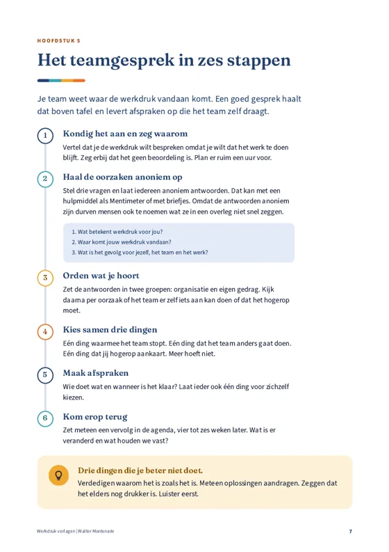

Gratis whitepaper
Werkdruk verlagen
Een handleiding voor leidinggevenden. Oorzaken vinden, het gesprek voeren en met je team aan de slag. Met een teamgesprek in zes stappen, een plan voor negentig dagen en een werkdruk-check.


Wat je leert
- Wat werkdruk is en wat niet
- Aan welke signalen je te hoge werkdruk herkent
- De twee soorten oorzaken van werkdruk
- Hoe je het teamgesprek voert in zes stappen
- Zeven knoppen waar je aan kunt draaien
- Een werkdruk-check voor je team
Voor leidinggevenden en teamleiders. 12 pagina's.
Download de whitepaper
Vul je gegevens in. Daarna kun je de whitepaper direct downloaden.